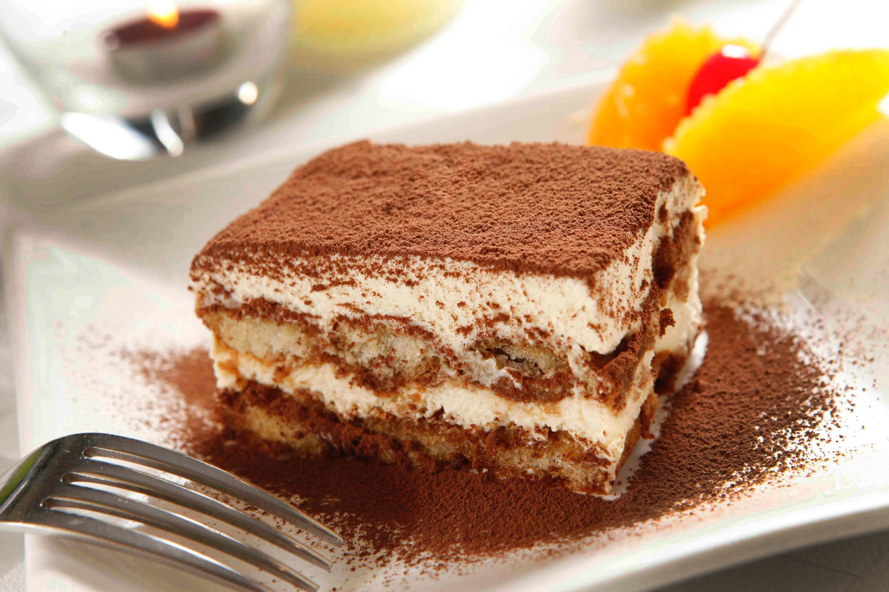
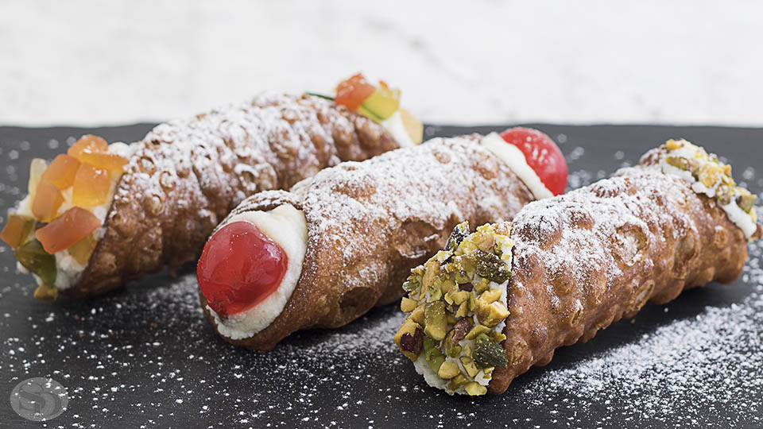

Receitas de Sobremesas
Delicie-se com as sobremesas mais famosas da Itália. Confira nossas receitas de tiramisu, panna cotta e cannoli.
Tiramisu
O tiramisu é uma tradicional sobremesa italiana, reconhecida mundialmente por sua combinação única de sabores e texturas. É uma sobremesa cremosa, leve e com notas marcantes de café, cacau e mascarpone.
Panna Cotta

A panna cotta é uma sobremesa italiana clássica, cremosa e simples, originária da região do Piemonte ,a panna cotta é feita com creme de leite, açúcar, gelatina e especiarias, como canela. Pode ser acompanhada por calda de frutas vermelhas , vinho ou chocolate, e pode incluir pedaços de fruta ou chocolate para decorar.
Cannoli
O cannoli é uma sobremesa tradicional da culinária italiana, originária da Sicília, famosa por sua crocância e recheio cremoso. É uma das sobremesas italianas mais icônicas e apreciadas ao redor do mundo.